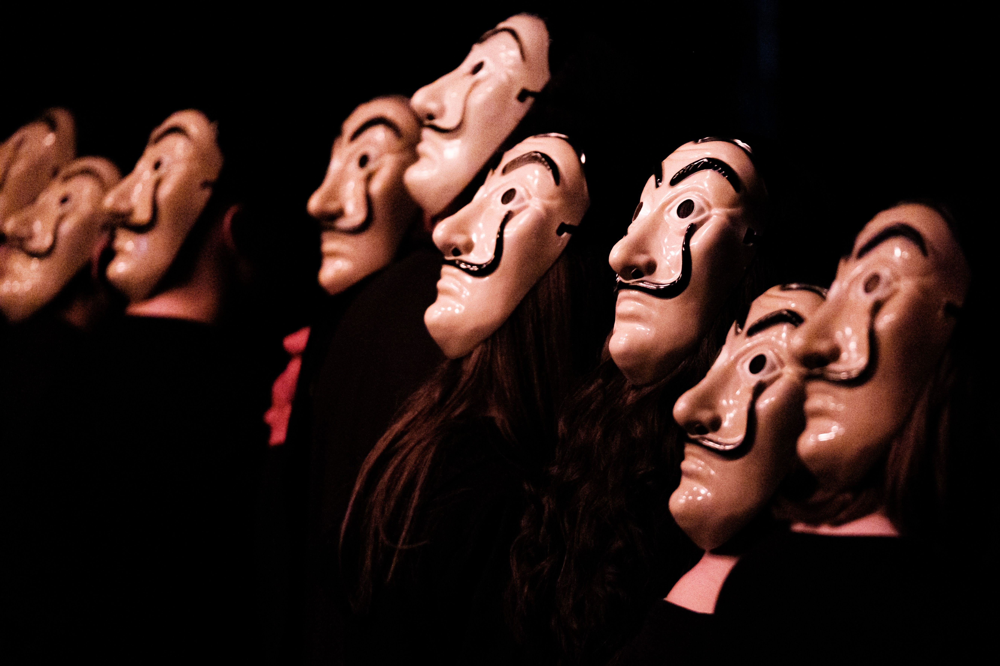

Amióta világ a világ, létezik a felállás, amelyben egyesek szórakoztatnak, mások szórakoznak, valaki gondolkodtat, a másik elgondolkodik, egyikünk emlékeztet, másikunk emlékezik. A szereplők változnak: egyszer a színpadon állsz, aztán a nézőtéren ülsz. A hangulat lehet vidám, emelkedett, szomorkás, meghatódott, de ez a felállás mindenképpen érzelmeket generál, mert ez is alapvető emberi szükséglet. A több évtizedes hagyománnyal rendelkező Bemutatkozik a Radnóti műsorában a táncos, zenés, énekes előadások és színdarabok váltották egymást, ahogy ezt a fotók is mutatják.
